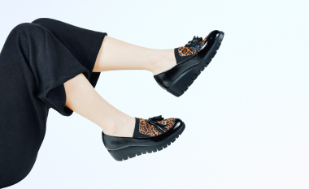

Как ухаживать за кожаной обувью
Обувь из натуральной кожи практичная, красивая и долговечная. Благодаря материалу, в ней тепло зимой и не жарком летом. Чтобы кожаная обувь прослужила вам ни один год, за ней необходимо правильно ухаживать.
Читать статью